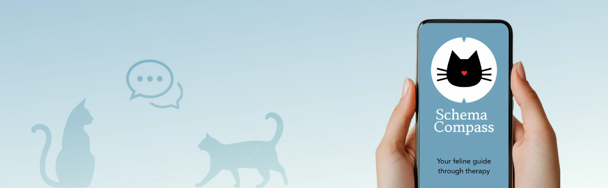
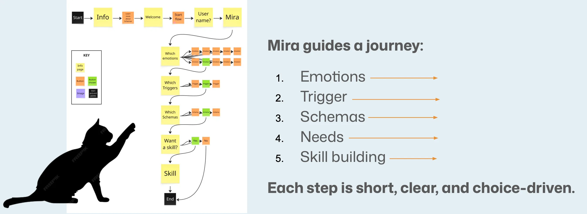
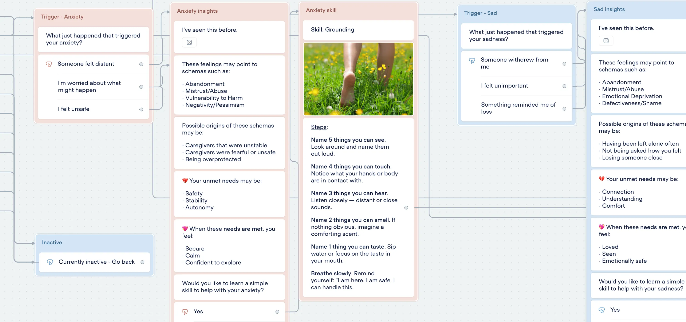

Schema Compass is a Voiceflow chatbot that guides adults through schema therapy concepts using conversation rather than text. This project demonstrates needs analysis, conversational learning design, accessibility decision-making, and iterative development based on user testing.
Schema therapy is a well-evidenced framework for understanding why people think, feel, and behave the way they do. But the resources available (workbooks, questionnaires, academic texts) are written for clinicians. They are text-heavy, overwhelming, and inaccessible to the people who could benefit most.
The design challenge was finding a format that could make complex, emotionally engaged content approachable without a therapist in the room.
Through guided questions, Mira surfaces the abandonment schema: a pattern of expecting to be excluded or left behind. The learner reads a short explanation of the unmet need beneath it. The session ends with a grounding technique in plain steps: notice five things you can see, four you can touch, three you can hear, two you can smell, one you can taste. Move your body gently.
Schema therapy is about applying a framework to lived experience, not memorising a taxonomy. That requires reflection, personalisation, and guided questioning. A chatbot can provide all three. A static resource cannot.
Mira was designed as a non-clinical guide to reduce anxiety and support reflection. User testing confirmed participants found the tone approachable and easier to engage with than a formal instructional voice, which matters when the content asks learners to examine their own patterns.
Each stage mirrors the therapeutic process and corresponds to a learning objective. Learners do not read about schemas; they apply the framework to their own experience as the content unfolds.

The five stages follow the same order as the schema therapy framework because the concepts depend on each other. You cannot name a schema without first grounding it in an emotion and a trigger. The sequence is the pedagogy and each stage is a prerequisite for the next.
Free text would require learners to already know the vocabulary of schema therapy. Buttons reframe the task to recognition rather than recall with a lower-demand cognitive task at the right point in the sequence. They also ensure every path reaches a coping skill, the actual learning outcome.
The character functions as an instructional scaffold, guiding learners through reflective activities without creating the sense of being assessed or diagnosed. When content asks learners to examine uncomfortable patterns, the framing of the interaction affects whether they engage honestly. User testing confirmed the tone landed as intended.
Each conversation path ends with a coping skill matched to the schema and emotion the learner identified with step-by-step instructions and a photograph. This is the transfer moment. Without it, the session is reflection without application.
Twenty schemas mapped across five domains with associated unmet needs, schema modes, and linked coping skills. This content model became the branching architecture before any build began.

A "How might we" brief framed the problem before solution development. Learning objectives were derived from the brief to define what success looks like for a learner completing the experience.
Full architecture mapped in Voiceflow before any content was written. Every path reviewed for dead ends. The goal: no learner path terminates without reaching a skill.
Every response written in plain language: warm, direct, non-clinical. Skill content written for immediate practical use, with numbered steps rather than abstract guidance.
Exploratory prototype validation with five participants including a clinical psychologist. Structured protocol across three phases: before use, immediately after, and on reflection. Two iterations made in response to identified friction points.
"It was well structured and clear. The cat assistance and lots of question prompts were what I liked most. I would like to see more skills and tools as options."
"I can see potential, despite this being a very limited demo. He tried it again with the volume up and said the voice makes it better."
"Reasonably clear from the start. Entering my name was what frustrated me most."
"I felt very guided. The practical strategies were easy to use. Send it to me when it's fully up and running. I'll use it."
"The voice is perfect: trustworthy, without being elite. For schema education and practising different responses I think this app idea is excellent."
| Measure (1–5) | Deb | Alan | Margi | Dr Cahill | Patrick |
|---|---|---|---|---|---|
| Ease of use | 5 | 4 | 5 | 5 | 5 |
| Helpfulness | 5 | 2 | 3 | 5 | 5 |
| Engagement | 5 | 2 | 2 | 4 | 5 |
Schema Compass is an educational tool, not a therapeutic one. All content was developed from primary sources (Young et al., 2003; Bricker and Young, 2020) and reviewed by a practising psychologist, who confirmed the educational framing was appropriate and expressed intent to recommend the tool to clients for use alongside therapy.
Testing validated the core concept. Ease of use was consistently high and the character voice landed, confirmed as appropriate by the psychologist, who asked to be sent the finished tool. Two iterations came directly from feedback: voice playback added, and name input rules updated after several users struggled to get started.
The most useful critique came from Alan, whose expectation of broader functionality identifies the gap between proof-of-concept and a tool that earns sustained engagement. Testing also revealed a limitation in the evaluation design: close-ended questions couldn't measure what participants had actually learned. Future testing would use open prompts tied to the learning objectives.